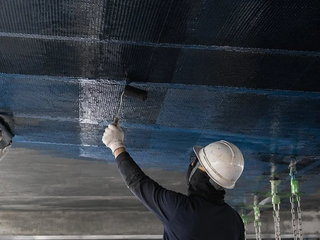

ARCHIVE
탄소섬유시트(CFRP) 구조보강 — 원리와 적용 범위
탄소섬유 보강은 균열을 덮는 마감이 아니라 부재가 받는 힘을 나누어 받게 하는 구조보강입니다. 보강 원리와 적용 범위, 시트·판·강판의 차이, 구조검토가 정하는 항목을 정리했습니다.

1. 무엇을 보강하는 공법인가
탄소섬유시트 보강은 콘크리트 표면에 고강도 섬유를 에폭시로 부착해, 부재가 부담해야 할 인장력의 일부를 섬유가 대신 받도록 만드는 공법입니다. 영어 약어로 CFRP 또는 CFS로 표기합니다.
이 공법이 손대는 것은 부재의 성능입니다. 균열이 보이지 않게 되거나 표면이 정리되는 것은 부수적인 결과이고, 그 목적만이라면 훨씬 간단하고 저렴한 방법이 있습니다. 보수와 보강은 목적이 다릅니다. 보수는 손상된 부분을 원래 상태에 가깝게 되돌리는 것이고, 보강은 없던 성능을 더하는 것입니다.
2. 적용 대상 — 언제 검토하는가
- 보·슬래브의 휨 또는 전단 내력이 부족한 것으로 검토된 경우
- 기둥을 감싸 구속(횡구속)해 성능을 확보해야 하는 경우
- 용도 변경이나 하중 증가로 기존 부재의 여유가 부족해진 경우
- 철근 단면손실 등으로 저하된 성능을 회복해야 하는 경우
공통점은 모두 구조적 판단이 앞선다는 것입니다. “균열이 크니까 탄소섬유를 붙이자”는 순서로는 필요 없는 보강을 하거나, 정작 필요한 보강을 놓칩니다.
3. 기술 원리 — 인장을 나누어 받는 재료
콘크리트는 압축에 강하고 인장에 약합니다. 그 인장을 철근이 받고 있는데, 철근량이 부족하거나 부식으로 단면이 줄었거나 하중이 늘어나면 여유가 사라집니다. 탄소섬유는 한 방향으로 정렬된 고강도 섬유 다발이고, 여기에 에폭시를 함침해 콘크리트 표면과 일체가 되면 그 방향의 인장을 함께 받습니다.
그래서 섬유가 향하는 방향이 결정적입니다. 힘의 방향과 어긋난 시트는 붙어 있어도 제 역할을 하지 못합니다. 또한 힘은 콘크리트 → 에폭시 → 섬유 순으로 전달되므로, 중간의 접착 계면이나 바탕 콘크리트가 약하면 섬유 자체의 강도는 의미를 잃습니다.
4. 시트·판·강판의 차이
- 탄소섬유시트(CFS) — 현장에서 수지를 함침해 붙입니다. 가볍고 곡면이나 기둥을 감싸는 형상에 유리하며 여러 겹 시공이 가능합니다. 대신 함침 품질이 현장 작업에 좌우됩니다.
- 탄소섬유판(CFRP plate) — 수지가 미리 함침·경화된 제품이라 현장 함침 공정이 없습니다. 품질이 균일하고 슬래브·보처럼 평탄한 면의 휨보강에 유리합니다.
- 강판보강 — 오래 쓰인 방식이지만 자중이 늘고, 부식 관리와 시공 난이도 부담이 있습니다.
부재 형상과 보강 목적에 따라 나뉘는 것이지, 어느 하나가 항상 우수한 것은 아닙니다.
5. 보강량·방향·정착은 구조검토와 설계가 정합니다
몇 겹을 붙일지, 어느 방향으로 놓을지, 어디까지 정착시킬지는 현장에서 임의로 정하는 항목이 아닙니다. 기존 부재의 상태와 하중조건을 조사한 뒤 구조검토를 통해 결정하고, 시공은 그렇게 정해진 설계내용을 정확히 구현하는 과정입니다.
내력의 회복이나 증가를 목적으로 하는 구조보강은 손상 부위를 되돌리는 단순 보수와 구분해 다룹니다. 보강이 필요한지, 얼마나 보강할지는 구조설계와 해당 공사의 설계도서·공사시방서를 기준으로 판단합니다. 시공자가 구조검토 없이 보강량을 정하는 방식은 이 구분에 맞지 않습니다.
6. 모체 콘크리트가 성능을 지배합니다
탄소섬유 보강에서 가장 자주 간과되는 부분입니다. 시트를 아무리 정성껏 붙여도 바탕 콘크리트가 들떠 있거나 강도가 확보되지 않으면 힘이 전달되지 않습니다. 국내 실험에서도 콘크리트 강도가 낮아질수록 부착강도와 파괴양상이 달라지는 것이 보고되었습니다.
그래서 순서가 정해집니다. 취약부 제거 → 철근 처리 → 단면복구 → 평활도 확보 → 보강. 녹물이 흐르거나 콘크리트가 떨어져 나온 상태에서 그 위에 시트부터 붙이는 것은 권하지 않습니다. 그 부분은 염해와 철근부식 보수에서 다룹니다.
7. 일반적인 시공 흐름
- 조사와 구조검토 — 보강 필요 여부, 보강량·방향·정착 설계
- 열화부 제거 — 들뜬 콘크리트와 취약부 정리
- 철근 처리와 단면복구 — 결손부를 보수모르타르로 회복
- 표면 연마 — 요철과 단차 정리, 모서리 면접기
- 프라이머 — 바탕 흡수 조절과 부착 확보
- 퍼티 — 남은 요철 조정
- 함침수지 도포 → 시트 부착 → 롤러 탈포 → 상부 함침수지 재도포
- 양생 — 제품이 정한 조건 확보
- 검사 — 들뜸·기포, 섬유방향, 단부와 겹침, 정착 상태 확인
- 보호마감 — 노출 조건에 따라 필요 시 적용
8. 보강 효과를 숫자로 약속하지 않습니다
국내 실험 연구에서 탄소섬유 보강을 적용한 RC 부재의 휨강도가 최대 27% 증가하고 연성이 크게 개선된 결과가 보고된 바 있습니다. 다만 이는 특정 시험조건에서 얻은 결과이며, 모든 건축물에서 보장되는 수치가 아닙니다.
보강 효과는 부재 형상, 기존 손상 정도, 보강량과 배치, 정착 상세, 콘크리트 강도에 따라 달라집니다. 그래서 “탄소섬유를 붙이면 내력이 몇 % 올라간다”고 미리 약속하는 대신, 구조검토에 따라 필요한 보강량을 결정한다고 쓰는 편이 기술적으로 정확합니다.
9. 관련 기준과 근거자료
- 전용 국가기준 — 국가건설기준(KDS·KCS) 안에서 탄소섬유시트 외부부착 보강만을 다루는 독립 코드는 확인되지 않았습니다. 이는 부존재의 증명이 아니라 미확인이며, 시공 전 국가건설기준센터에서 다시 확인하는 것을 권합니다. 실무에서는 학회 지침, 해당 현장의 구조설계서와 공사시방서, 채택한 제조사 시스템의 시방과 시험성적서를 근거로 적용합니다.
- KS F 2762 콘크리트 보수·보호재의 접착 강도 시험 방법 — 바탕면과 보수재의 접착강도를 확인하는 시험방법 표준입니다. 모든 보강 시스템에 공통으로 적용되는 합격강도를 정한 기준은 아니므로, 합격값은 구조설계와 시스템 시방에서 지정합니다.
- KS F 4923 — 함침·접착에 쓰는 에폭시 계열의 제품표준으로 확인합니다.
- KS F 4042 · KS F 4043 — 보강 전 단면복구에 쓰는 모르타르의 제품표준입니다.
인터넷에서 탄소섬유시트의 KS 제품표준 번호로 인용되는 값들이 있으나, 공식 조회로 실재를 확인하지 못했습니다. 확인되지 않은 규격 번호를 근거로 쓰지 않는 것이 원칙입니다.
여기 적은 표준과 기준은 개정될 수 있습니다. 실제 공사에 적용하기 전에 국가건설기준센터와 국가표준 관련 공식 시스템에서 최신판을 다시 확인하고, 그 현장의 구조설계서·공사시방서와 함께 대조하시기 바랍니다.
10. 제주 해안 구조물에서의 주의사항
탄소섬유 자체는 부식되지 않습니다. 그러나 그 안의 철근이 부식되는 것을 막아 주지는 않습니다. 해안 구조물에서 염분이 이미 침투한 상태라면, 보강 전에 염화물·탄산화·철근 상태를 조사하고 부식 원인을 처리하는 절차가 먼저입니다.
제주 해안은 지역별 편차가 큽니다. 최근 전국 해안을 실측한 연구에서 해안 100m 지점의 비래염분량이 제주 동부에서 특히 높게 나타났습니다. 같은 제주 안에서도 해안거리와 주풍향에 따라 조건이 달라지므로, 현장 단위로 확인합니다.
11. 어떤 서비스로 이어지는가
내력 부족이 의심되는 경우에는 구조검토가 먼저입니다. 검토 결과 보강이 필요하다고 정해지면, 그 앞단의 취약부 제거와 단면복구부터 콘크리트 보수보강에서 함께 진행합니다. 시공 중에만 확인할 수 있는 품질 항목은 탄소섬유 보강 품질관리에 따로 정리했습니다.